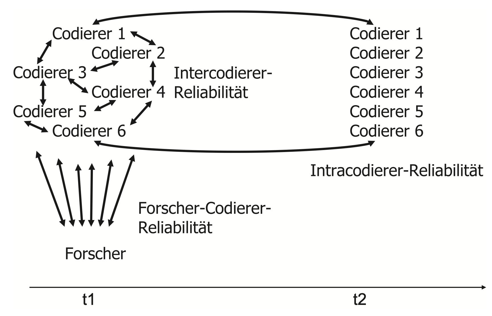

| id | text |
|---|---|
| 1 | And toxic masculinity is actually a byproduct of toxic femininity. |
| 2 | Is he working on stuff too? Ask her where she goes to school, what she plans to study, etc. She’ll ask you the same questions in return if she’s interested. |
| 3 | This is coming from the bitch who once flashed a teacher to distract him so her boyfriend could sneak out of detention. God the bitch used to be so much cooler. |
| 4 | Holy fucking shit dude. Fuck this bitch. Seriously. OP, I wish I could say I feel your pain but I don’t. All I can say is I hope you pull through it all. I fully believe in karma and it is a bigger bitch than this woman. |
| 5 | People have no problems with a female lead. They got problems with them shoving down bullshit PC/SJW down their throats. Disney already ruined Star Wars Marvel is just next on the list. |
Inhaltsanalyse: Inhalte öffentlicher Kommunikation
Prof. Dr. Michael Scharkow
Wintersemester 2024/25
Sitzung 1
Lernziele
- Wie führen wir ein Forschungsprojekt durch?
- Wie koordinieren und managen wir ein komplexes Projekt mit mehren Mitarbeitern unter Zeitdruck? (Projektmanagement)
- Wie präsentieren wir Projektfortschritte, Forschungsprozesse und Forschungsergebnisse?
- Wie geben wir konstruktives Feedback im Forschungsprozess? Wie nehmen wir Feedback an und setzen es um?
- Spaß haben in der Forschung!
Warum Computational Methods?
- mein Lehr- und Forschungsbereich
- hohe Nachfrage in der Kommunikationswissenschaft
- relevante Skills in vielen Jobs außerhalb der Wissenschaft (Data Science, Journalismus, Marktforschung)
- Ziel ist vor allem Verständnis der Grundlagen und Dinge ausprobieren
Inhalt
| Sitzung | Datum | Thema |
|---|---|---|
| 1 | 25.10.2024 | Einführung und Grundlagen |
| 2 | 08.11.2024 | CCS: Inhaltsanalyse mit LLM |
| 3 | 15.11.2024 | Themenwahl und Forschungsfragen |
| 4 | 22.11.2024 | Studiendesign und Stichprobe* |
| 5 | 29.11.2024 | CCS: Datenerhebung |
| 6 | 06.12.2024 | Kategorien und Codierung* |
| 7 | 13.12.2024 | CCS: Reli-Test und Validierung* |
| 8 | 20.12.2024 | Codebuch-Finalisierung (Sprechstunde) |
| 9 | 10.01.2025 | Feldphase (Sprechstunde) |
| 10 | 17.01.2025 | Datenanalyse und -visualisierung* |
| 11 | 24.01.2025 | Ergebnisaufbereitung |
| 12 | 31.01.2025 | Abschluss |
Literatur


Leistungen
Aktive Teilnahme
- aktive Mitarbeit in einer Arbeitsgruppe
- 1 Gruppenbericht zum Stand der Arbeit
- 3 Hausaufgaben zu CCS-Sitzungen
Prüfungsleistung
- Projektbericht als Gruppenhausarbeit
Studentische Arbeitsgruppen
- i.d.R. 4 Studierende pro Gruppe (= max. 5 Gruppen im Seminar)
- ‚Learning by doing’ in der AG
- von anderen AGs lernen über andere Methoden, Themen und Arbeitsweisen
- Lernen von Feedback zur eigenen Arbeit und der Arbeit der anderen AGs
Gruppenberichte
- jedes Gruppenmitglied ist federführend für einen Bericht
- Protokollierung des Diskussionsprozesse in der AG seit dem letzen Bericht
- Vorbereitung einer zusammenfassenden Kurzpräsentation (5 min) mit 2-3 Folien
- Upload der Folien spätestens Fr, 8h in Moodle
- alle anderen geben Feedback für eigene und andere AG
Sitzungen zu CCS
- Inverted Classroom, d.h. verpflichtende Vorbereitung
https://stats.ifp.uni-mainz.de/ba-ccs-track/ - Hausaufgaben für jede CCS-Sitzung, Abgabe jeweils Do, 12h in Moodle
- eigenes Notebook zu den praktischen Sitzungen mitbringen
- wir verwenden R und RStudio, https://rstudio.ifp.uni-mainz.de
- gern paarweise arbeiten, das hilft in der Sitzung und macht mehr Spaß
Hausarbeiten
- Gruppenhausarbeit als Modulprüfung
- maximal (!) 10 Seiten pro Gruppenmitglied, max. 10.000 Wörter insgesamt
- Dokumentation der eigenen Arbeit, d.h. Gruppenberichte können recycled werden
- es muss nichts “rauskommen”, außer dass sie etwas gelernt haben
- Formalien und Regeln wissenschaftlicher Arbeit sind wichtig und notenrelevant
Was ist Inhaltsanalyse?
Aufgabe
https://sosci.zdv.uni-mainz.de/ia_btw2021/
- Codieren Sie politische TikTok-Inhalte zunächst alleine in verschiedenen Formaten.
- Was ist Ihnen beim Codieren aufgefallen? Was war einfach, was schwierig?
Definitionen
„Content analysis is a research technique for the objective, systematic, and quantitative description of the manifest content of communication.” (Berelson 1952, S. 18)
„Die Inhaltsanalyse ist eine empirische Methode zur systematischen, intersubjektiv nachvollziehbaren Beschreibung inhaltlicher und formaler Merkmale von Mitteilungen” (Früh, 1998, S.24)
“Content analysis is a research technique for making replicable and valid inferences from texts (or other meaningful matter) to the contexts of their use.” (Krippendorff, 2004, S. 18)
Theorie der Inhaltsanalyse - Inferenzen

Quelle: Früh, 2007
Aufgabe
Diskutieren Sie in Paaren, wie nach Benoit et al. (2009) politische Positionen zu Aussagen werden, und welche Inferenzen wir durch Analysen dieser Aussagen ziehen können.
Manuelle und automatische Codierung
Aufgabe
Es soll Sexismus in Social Media Posts dichotom codiert werden (ja/nein).
- Entwerfen Sie eine kurze (1-3 Sätze) Codieranweisung auf englisch.
- Tauschen Sie die Codieranweisung mit Ihrer Sitznachbarin aus.
- Codieren Sie die 5 Aussagen auf der nächsten Seite mit Hilfe der Codieranweisung.
- Nutzen Sie eine KI (ChatGPT, Gemini, Copilot) und lassen Sie diese dieselben 5 Aussagen codieren.
- Notieren Sie Ihre und die KI-basierten Codierentscheidungen.
Posts
Zero-Shot-Codierung
- Large Language Models (umgangssprachlich oft KI) können verschiedene sprachliche Aufgaben “lösen”, u.a. auch inhaltsanalytische
- da die Modelle dafür nicht extra angepasst werden müssen, spricht man von Zero-Shot-Codierung
- im Gegensatz zu älteren automatischen Verfahren braucht es (fast) keine Umstellung gegenüber manuellem Codieren
- zahlreiche aktuelle Studien untersuchen, ob man manuelle Codierung durch LLM-basierte ersetzen kann
- ob und wie gut man eigene Kategorien mit LLM codieren kann, muss man ausprobieren (und machen wir)
Hausaufgaben
- https://stats.ifp.uni-mainz.de/ba-ccs-track/ia-zeroshot.html selbständig durcharbeiten
- Hausaufgabe (Abgabe Do, 12h, Moodle)
- Lektüre: Törnberg (2023)
Fragen?
Sitzung 2
HA Zero-Shot-Codierung
- Wie hat unser Beispielcode funktioniert?
- Wie haben Sie die Aufgaben gelöst?
- Wie kann man größere Mengen an Codierungen automatisch durchführen?
Wie funktioniert ein Neuronales Netz?

https://medium.com/data-science-365/overview-of-a-neural-networks-learning-process-61690a502fa
Was sind Transformer Modelle
Explainer: https://ig.ft.com/generative-ai/
Multimodale Embeddings: CLIP

https://openai.com/index/clip/
Wie funktioniert ChatGPT?

https://openai.com/blog/chatgpt
Aufgabe: Prompting-Strategien
- Worin unterscheiden sich Zero-Shot-, Few-Shot- und Chain-of-Thought-Strategien für die Codierung? (vgl. Weber & Reichardt, 2024)
- Entwickeln Sie für die Hausaufgabe zur Codierung Studierende je einen Prompt-Typ und testen Sie diese.
- (Wie) funktioniert dies bei der Bildklassifikation?
Vor- und Nachteile der LLM-Codierung
- Prompts ähneln manuellen Codieranweisungen (+ etwas Prompt Engineering)
- LLM können Codierentscheidung und Begründungen liefern
- viele verschiedene kommerzielle und freie LLM sind verfügbar, Ensemble Codierung möglich
- nicht alles lässt sich leicht per LLM codieren (z.B. einfach Personen zählen)
- kommerzielle LLM kosten Geld pro Abfrage und haben ggf. Guardrails, die die Codierung verhindern bzw. erschweren
- die Nutzung von LLM ist datenschutzrechtlich und ethisch bedenklich
- multimodalle LLM sind aktuell noch sehr neu und ungetestet
- validieren, validieren, validieren!
Aufgabe: Codepläne in aktueller Forschung
- In Moodle sind 15 Titelseiten plus Codepläne aus aktuelleren Publikationen abgelegt.
- Suchen Sie einen oder mehrere interessante Artikel aus und versuchen probehalber einige oder alle dort codierten Kategorien einmal anzuwenden.
- Laden Sie sich dafür exemplarisch Texte oder Bilder aus dem Internet und codieren Sie diese (a) manuell und (b) mit Hilfe von LLM.
Hausaufgaben
- Bilden Sie Arbeitsgruppen (à 4 Personen) und entwickeln Sie erste Themenideen (ca. 1-3 Themen).
- Bringen Sie die Themenideen als kurze Pitches samt Forschungsfrage(n) mit.
Fragen?
Sitzung 3
Ihre Themenideen
Noch einmal: Inferenzen
Früh, 2007
Was ist eine gute Forschungsfrage?
- Eine Forschungsfrage ist eine Frage!
- Eine Forschungsfrage lässt sich empirisch beantworten, am besten mit der eigenen Inhaltsanalyse.
- Eine Forschungsfrage ist weder zu allgemein noch zu spezifisch.
- Eine Forschungsfrage hat oft eine (implizite oder explizite) Vergleichsdimension.
- Inhaltliche und methodische Forschungsfragen sind gleich relevant.
Was ist eine gute Hypothese?
- Eine Hypothese ist empirisch falsifizierbar, und es muss klar sein, wann sie falsifiziert ist.
- Eine Hypothese ist klar und widerspruchsfrei formuliert.
- Eine Hypothese ist einfach, komplexe Hypothesen sollten in einfache Hypothesen zerlegt werden.
- Es ist nicht schlimm, sich widersprechende Hypothesen zu formulieren (H1a vs H1b).
- Eine Nullhypothese ist selten eine interessante Hypothese, und oft nicht leicht zu prüfen.
Woher bekommt man gute Hypothesen?
- existierende Theorien mit klaren Annahmen
- existierende empirische Befunde (auch bei mehrdeutiger Ergebnislage)
- eigene Herleitung aus plausiblen, begründeten Annahmen
- nicht: 3 Sätze Alltagserfahrung
Begriffsarbeit
Quelle: Kromrey et al. (2016)
Fragen?
Aufgaben bis nächste Woche
- Recherchieren sie relevante Literatur zu ihrem Thema.
- Formulieren sie (eher allgemeine) 1-2 Forschungsfragen.
- Stellen sie 3-5 (eher konkrete) Hypothesen auf (mit Begründung!).
- Unterziehen Sie die für Ihre Studie relevanten Konstrukte einer dimensionalen und semantischen Analyse.
Forschungsdesign und Stichprobe
5-Minuten Präsentationen
Forschungsdesign
- die Grundlagen fast aller empirischen Untersuchungen ist der Vergleich
- bei der Inhaltsanalyse typische Vergleiche:
- verschiedene Medienangebote oder Plattformen
- verschiedene Kommunikatoren
- verschiedene Messzeitpunkte
- mehr als zwei Vergleichsdimensionen machen die Analyse und Ergebnisdarstellung oft komplex
Einheiten der Inhaltsanalyse
- Auswahleinheit
- Untersuchungseinheit
- Analyseeinheit
- Codiereinheit
- Kontexteinheit
Auswahl vs. Analyseeinheit
Auswahleinheit
- alle vorliegende Materialen, die aus dem gesamten Spektrum verfügbaren Medienmaterials für die Untersuchung ausgewählt werden
- Beispiel: Facebook-Posts der IfP-Seite (inkl. dazugehöriger Kommentare)
Analyseeinheit
- Einheit, auf die man sich bei der Interpretation beziehen will und für die ein Codebogen angelegt wird
- z.B. Beitrag, Foto, Absatz oder Aussage
Analyseeinheit: Aussage oder Beitrag?
Beitrag
- weniger aufwändig, aber ungenauer
- entspricht eher dem Verständnis der Rezipienten, weil sie aller Wahrscheinlichkeit nicht jede Aussage wahrnehmen und behalten
Aussage
- sehr aufwändig, aber ggf. genauer
- ggf. enthalten Beiträge unterschiedliche Aussagen, die man berücksichtigen will
- Herausforderung: reliable Identifikation derselben Aussagen
Stichprobenziehung
Grundgesamtheit
- Alle Botschaften (Artikel, Beiträge usw.), über die die Studie etwas aussagen soll
- Auswahl der Grundgesamtheit setzt sich zusammen aus Auswahl der Medien und Auswahl des Untersuchungszeitraums
Auswahlverfahren bei der Stichprobenbildung
- Vollerhebung (alle Einheiten)
- Zufallsauswahl (z.B. mehrstufig)
- nicht zufallsgesteuert (willkürliche, typische Fälle)
Stichprobenpraxis
- oft werden Inhalte in einer mehrstufigen Auswahl gezogen
- nicht auf allen Stufen ist derselbe Auswahlmechnismus nötig oder sinnvoll
- Beispiel:
- Auswahl von Politikeraccounts auf Instagram (gezielte Auswahl)
- Auswahl von 100 zufälligen Beiträgen aus 2019 (einfache Zufallsstichprobe)
- Auswahl jedes 5. Nutzerkommentars (bis zu 20) (systematsche Zufallsstichprobe)
Stichproben und Inferenzschlüsse
- die Auswahl der Untersuchungseinheiten bestimmt, welche Inferenzschlüsse man ziehen kann
- streng genommen sind statistische Inferenzen nur für Zufallsstichproben möglich
- Für welche zusätzlichen (unbekannten) Untersuchungseinheiten können wir Voraussagen treffen?
- Beispiel:
- Sie finden stat. signifikante Unterschiede zwischen Posts der offiziellen SPD- und FDP-Twitter-Accounts im Oktober 2019
- Auf was beziehen sich Ihre Inferenzen?
Stichprobenumfang
- je größer die Stichprobe, desto präziser die Schätzung
- Stichprobenumfang hat nichts mit Repräsentativität zu tun
Beschaffung des Materials
- Woher bekomme ich die Inhalte?
- technische Schwierigkeiten, z.B. zuverlässiges Speichern der Inhalte
- rechtliche Schwierigkeiten, z.B. Verbot in Terms of Services
- Welche Teile (Text, Bild, Video, etc.) des Beitrags werden zur Codierung benötigt?
- Kann ich die Inhalte automatisch speichern und verarbeiten?
Aufgaben bis zur nächsten Sitzung
- Lesen Sie Datenerhebung in R
- Lösen Sie die Hausaufgaben 1 und 2 in R
- Wenn Sie Firefox installiert haben: Bitte Zeeschuimer Erweiterung installieren https://github.com/digitalmethodsinitiative/zeeschuimer/releases/download/v1.11.1/zeeschuimer-v1.11.1.xpi
Aufgaben bis zur übernächsten Sitzung
- Finalisieren Sie die Forschungsfragen und Hypothesen.
- Diskutieren und finalisieren Sie das Untersuchungsdesign Ihrer Studie.
- Definieren Sie Untersuchungseinheit(en) und Grundgesamtheit.
- Entwickeln Sie einen konzeptionell angemessenen Stichprobenplan.
- Überlegen Sie, wie die Stichprobenziehung praktisch umgesetzt werden kann.
Sitzung 5
Erhebung von Inhalten für Inhaltsanalysen
- sehr viele Text- und Bild-Inhalte sind digital (und online) vorhanden, aber Zugang für wissenschaftliche Zwecke oft problembehaftet
- Problem 1: Vollständigkeit, z.B. durch selektive Rechtevergabe oder technische Zugangsbarrieren im Archiv
- Problem 2: Rechtslage/Copyright, wobei Forschung und Lehre stark priviligiert sind
- Problem 3: Ethische Fragen, etwa ob Individuen Schaden bei der Erhebung ersteht oder Zustimmung der Betroffenen vorliegt
- Problem 4: Praktische und methodische Fragen, etwa wie man möglichst zuverlässig Inhalte erheben kann
Online-Archive traditioneller Medien
- seitens der Anbieter, z.B. SPIEGEL oder ZEIT Archiv, Tagesschau Sendungsarchiv
- kommerzielle Datenbanken, z.B. LexisNexis oder Factiva
- GDELT (Global Database of Events, Language and Tone) und Mediacloud als riesige, nicht-kommerzielle Datenbanken (ohne Volltexte)
- NewsAPI als kommerzielle Datenbank mit einfachem Zugriff, aber limitiertem (kostenlosen) Zugang
Mobile Apps und andere geschlossene Systeme
- technisch extrem schwierig zu erheben durch Sandboxing auf Android/iOS
- Alternative 1: Überwachung und Mitschnitt von Netzwerk-Traffic
- Alternative 2: Data Donations von NutzerInnen, z.B. in Form von Screenshots (u.a. Screenome Project)
Datenerhebung mit R
Möglichkeiten, aufsteigend vom leichtesten zum schwierigsten
- maschinenlesbaren Dateien direkt aus dem WWW einlesen (z.B. CSV-Files)
- fertige R-Pakete für einzelne Plattformen/Anbieter verwenden
- über API (Application Programming Interface) halb-standardisierte Daten erhalten
- über Web-Scraping HTML-Inhalte von Websites herunterladen und verarbeiten
- über ferngesteuerte Browser Inhalte erheben oder Screenshots erstellen
- NutzerInnen um Datenspenden bitten
Was ist eine API?
- Austausch maschinenlesbarer Daten zwischen verschiedenen Programmen/Computern
- Formate sind standardisiert (z.B. XML oder JSON), Inhalte variieren
- Web-APIs nutzen die gleichen Protokolle wie Browser, aber liefern anderen Datenstrukturen
- oft nutzen Plattformen für ihre eigenen (Mobil-) Apps ebenfalls APIs
- mit speziellen R-Paketen können diese API-Daten wieder in R-Objekte wie z.B. Datenframes umgewandelt werden
Beispiel JSON
https://api.breakingbadquotes.xyz/v1/quotes
[
{
"quote": "I have lived under the threat of death for a year now, and because of that, I've made peace with it.",
"author": "Walter White"
}
]
Workflow
- Datenquelle finden (Website, Feed, API)
- relevanten Ausgangspunkt finden (Suchanfrage, Accountname, etc.)
- Daten herunterladen
- Daten filtern und auswählen
- Daten in ein standardisiertes Format für die Analyse bringen
- (Daten quick & dirty auswerten oder visualisieren)
Buchempfehlungen


CLI-Tools in Python
- für spezifische Aufgaben gibt es zahlreiche Tools, z.B.
- Videos herunterladen -
youtube-dlp - Audio transkribieren -
whisper-ctranslate2 - Videos in Einzelbilder zerlegen -
vcsi - Python ist auf Mac und Linux-Systemen installiert, unter Windows kann es nachinstalliert werden
- Installation der einzelnen Pakete über
pip install <tool>
Aufgabe 1
- Installieren Sie das CLI-Tool youtube-dlp und laden Sie Videos und Metadaten eines TikTok-Kanals herunter.
- Importieren Sie die Daten in R. Welche Meta-Daten werden gesammelt?
Zeeschuimer-Datenspende
- Firefox-Erweiterung, die beim Surfen auf bestimmten Plattformen die angezeigten Inhalte und deren Metadaten speichert
- Export als
ndjson-Datei, die man mit R einlesen kann - vor allem für Instagram und ggf. auch TikTok interessant
- sehr umfangreiche Meta-Daten, aber etwas unübersichtlich
Aufgabe 2
- Laden Sie mit Zeeschuimer Daten von Instagram oder TikTok herunter.
- Importieren Sie die Daten in R.
- Werten Sie die Daten ein wenig aus.
Aufgabe 3
- Überlegen Sie, welche Online-Daten Sie für Ihr Projekt wie erheben wollen.
- Welche weiteren Schritte sind nötig (Transkription, Bildzerlegung, etc.)?
- Erstellen Sie eine Datenpipeline auf dem Papier, die wir dann ggf. automatisieren können.
Aufgaben bis zur nächsten Sitzung
- Finalisieren Sie die Forschungsfragen und Hypothesen.
- Diskutieren und finalisieren Sie das Untersuchungsdesign Ihrer Studie.
- Definieren Sie Untersuchungseinheit(en) und Grundgesamtheit.
- Entwickeln Sie einen konzeptionell angemessenen Stichprobenplan.
- Überlegen Sie, wie die Stichprobenziehung praktisch umgesetzt werden kann.
Sitzung 6
5-Minuten Präsentationen
Codierprozess als gelenkte Rezeption
- Problem: Informationen über die Struktur von großen Mengen von Botschaften
- Lösung 1: Selektion: Nicht alle Dimensionen der Botschaften werden berücksichtigt
- Lösung 2: Klassifikation: Die Dimensionen werden kategorisiert und gemessen
- Nachteil: Informationsverlust
- Vorteile:
- Reduktion von Komplexität
- Analyse großer Mengen von Botschaften möglich
Kategorien
- Formale Kategorien
- Medium, Autor
- Umfang des Beitrag
- Datum
- Inhaltliche Kategorien
- Themen der Artikel („Hauptthema”)
- Akteure der Artikel („Hauptakteur”)
- Urheber von Aussagen
- Tendenz/Bewertung
Kategorienbildung
- empiriegeleitet
- Auswahl von Beispielen
- Sammlung von Themen, Aussagen, Argumenten usw., die repräsentativ sind
- Identifikation der inhaltlichen Struktur und Bildung von Gruppen
- erster Kategorieentwurf
- theoriegeleitet
- Frühere Studien und Hypothesen
- Erwartung zu Inhalt und Struktur
- erster Kategorieentwurf
Kategorien im Codebuch
- Verbale Beschreibung
- “Hier wird codiert, ob der Post ein politisches Thema behandelt.”
- Information über die Indikatoren (wenn nötig)
- “Politische Themen werden codiert, wenn der Beitrag Politikfelder (z.B. Innen- oder Wirtschaftspolitik), den politischen Prozess (z.B. Wahlen) oder politische Institutionen (z.B. Bundestag) behandelt.”
- Messanweisungen i.e.S. (= Regeln für die Überführung der Daten)
- 0 = kein politisches Thema, 1 = politisches Thema
Kriterien guter Kategorien
- Kategorien müssen die Forschungsfragen beantworten können.
- Kategorien müssen trennscharf sein.
- Kategorien müssen erschöpfend sein („Sonstiges”-Kategorie)
- Kategorien müssen auf dem selben Klassifikationsprinzip beruhen, d.h. sie dürfen nur eine Dimension messen.
Strategien für Kategorien
- Multinomiale Variablen = mehrere Ausprägung
- 1 = Außenpolitik, 2 = Innenpolitik, 3 = Wirtschaftspolitik
- Problem: gleichzeitiges Auftreten mehrerer Ausprägungen
- Dummy-Codierung (Mehrfachantworten)
- V1: Außenpolitik 0/1, V2 Innenpolitik 0/1, …
- Nachteil: vielen Nullen in den Daten, Eingabe etwas aufwändiger
- Wichtig: NIE mehrere Werte in eine Zelle des Codesheets eintragen
Aufbau Codebuch
- Informationen über das Thema der Analyse
- Forschungsfragen/ Hypothesen
- Informationen über den Untersuchungszeitraum
- Definitionen der Auswahl-, Analyse, Codier- und Kontexteinheit
- Informationen über das Auswahlverfahren (Vollerhebung vs. Stichprobe)
- Definition der Zugriffskriterien
- Allgemeine Codieranweisungen
- Kategoriensystem (= alle Kategorien zusammengenommen)
- Codebogen
Zero-Shot Codierung
- am besten die Zero-Shot-Tasks gleich mitdenken bzw. identische Codieranweisungen für Codierer und LLM
- structured output Beispiel in R ansehen, Code anpassen
- mehrere LLM-Modelle/Anbieter als Codierer verwenden
- validieren, validieren, validieren!
Aufgaben bis nächste Woche
- Finalisieren Sie Forschungsdesign und Stichprobenplan.
- Entwickeln Sie ein erstes Codebuch für die Studie.
- Erstellen Sie ein passendes Codesheet für die Dateneingabe in Excel oder Teams.
- Jedes Gruppenmitglied codiert dieselben (!) 10 Codiereinheiten, die Codierungen werden untereinander in einer Datei gesammelt.
Sitzung 7
5-Minuten Präsentationen
Gütekriterien
- Validität
- Gültigkeit der Messung
- Betrifft den gesamten Messvorgang
- Reliabilität
- Zuverlässigkeit (=Reproduzierbarkeit) der Messung
- Betrifft die eigentlich Messprozedur
- Wird aus der Übereinstimmung in der Codierung abgeleitet
Typen der Reliabilitätsmessung nach Rössler, 2017
Festlegung von Übereinstimmung und Abweichung
- Für die Bewertung der Reliabilität muss zunächst festgelegt werden, was eine Übereinstimmung und Abweichung bei der Codierung darstellt.
- Einfach bei Kategorien mit dichotomer Ausprägung (“An-/Abwesenheit”).
- Schwieriger bei Kategorien mit ordinal/metrischem Niveau.
- Wie stark darf die Abweichung sein (Toleranzbereich)?
Reliablitätsindex I: Übereinstimmung nach Holsti
- Berechnet die Übereinstimmung zwischen zwei Codierern.
- Kann als prozentuale Übereinstimmung interpretiert werden.
- Ignoriert die Wahrscheinlichkeit von zufälliger Übereinstimmung, z.B. .5 bei dichotomen Variablen.
- Begrenzt aussagefähig bei sehr schiefen Verteilungen.
- Bsp.: Eine 0/1 Variable wird in 9 von 10 Fällen von Codierern A abwesend codiert (0) und ein Mal mit (1). Codierer B codiert immer 0. Holsti = .9, obwohl wir gar nicht wissen, ob die Codierer überhaupt Ausprägung 1 erkennen.
- Akzeptable Werte: nahe 1 (formale Kategorien) oder > .8 (inhaltliche Kategorien)
Reliablitätsindex II: Krippendorffs \(\alpha\)
- Gold-Standard in der Kommunikationswissenschaft für Reliabilitätstests.
- Berücksichtigt die Wahrscheinlichkeit zufälliger Übereinstimmungen, d.h. es wird geprüft, inwieweit die beobachtete Übereinstimmung über der zufälligen liegt.
- Für mehr als zwei Codierer und verschiedene Skalenniveaus geeignet.
- Akzeptable Werte wie bei Holsti (> .8), allerdings deutlich “strenger” wg. Zufallskorrektur.
Validierungsmaße für Classifier
- manuelle Codierung als Goldstandard
- Abweichung automatischer von manueller Codierung
- Grundlage: Konfusionsmatrix mit korrekt/falsch positiven/negativen
- Maße: Precision, Recall, F-Score
Aufgaben bis nächste Woche
- Codebuch überarbeiten
- Reliabilitätstest durchführen (20 Codiereinheiten) und auswerten
- Datenerhebung abschließen
Keine Sitzung nächste Woche, aber Angebot Sprechstunde per Teams zum gleichen Termin.
Sitzung 10
5-Minuten Präsentationen
Datenbereinigung
- Fusionieren der einzelnen Codesheets
- Entfernung von Formatierungen, zusammengefassten Zellen, etc.
- Import in SPSS oder R
- Prüfen von Missings und falschen Codes (univariate Häufigkeitstabellen)
Datenaggregation
- oft entspricht Codiereinheit (z.B. Aussage) nicht Analyseeinheit (z.B. Beitrag)
- Aggregation auf Ebene der Analyseeinheit
- Berechnung von Summen- oder Mittelwertindices pro Analyseeinheit
- Prüfung durch Vergleich aggregierte vs. nicht aggregierte Zahlen
- Neuberechnung der korrekten Fallzahlen
Datenauswertung
Für jede Hypothese 3 min Schritte:
- Deskriptive Auswertung (z.B. Gruppenmittelwerte, Prozentanteile)
- inferenzstatistischer Test (t-Test, ANOVA, Chi-Quadrat-Test)
- Ergebnisdarstellung als Text, Tabelle und/oder Grafik
Hinweis: Bei 0/1 Dummy-Variablen entspricht der Mittelwert dem Anteil 1, und oft reicht es, diese zu berichten bzw. zu vergleichen.
Ergebnisteil im Projektbericht
- Beschreibung der finalen Stichprobe (allgemein relevante Informationen)
- Univariate Auswertung zentraler Variablen
- Auswertung der eigentlichen Hypothesen
- weitere interessante Analysen
Wichtig: Exaktheit, Konsistenz, Beschriftungen, etc.
Fragen?
Aufgaben heute
- Bereiten sie Ihre Codierdaten final auf und prüfen sie auf Konsistenz etc.
- Berechnen sie ggf. aggregierte Kennzahlen für die Analyse.
- Berechnen sie zentrale Kennzahlen der Stichprobe für den Ergebnisbericht.
- Planen sie die notwendigen Analyseschritte für die Hypothesentests, d.h.
- Welche Variablen sind univariat und bivariate auszuwerten?
- Welche stat. Test sind für jede Hypothese notwendig?
- Wann wäre die Hypothese wider- oder belegt? (nicht “bewiesen” oder “verifiziert”)
- Werten sie die Daten entsprechend aus.
Literatur
Benoit, K., Laver, M., & Mikhaylov, S. (2009). Treating Words as Data with Error: Uncertainty in Text Statements of Policy Positions. American Journal of Political Science, 53(2), 495–513. https://doi.org/10.1111/j.1540-5907.2009.00383.x
Kromrey, H., Roose, J., & Strübing, J. (2016). Empirische Sozialforschung: Modelle und Methoden der standardisierten Datenerhebung und Datenauswertung (Bd. 1040). Utb.
Törnberg, P. (2023). How to use LLMs for text analysis. https://arxiv.org/pdf/2307.13106
Weber, M., & Reichardt, M. (2024). Evaluation is all you need. Prompting Generative Large Language Models for Annotation Tasks in the Social Sciences. A Primer using Open Models. https://arxiv.org/pdf/2401.00284
Social Media Plattformen